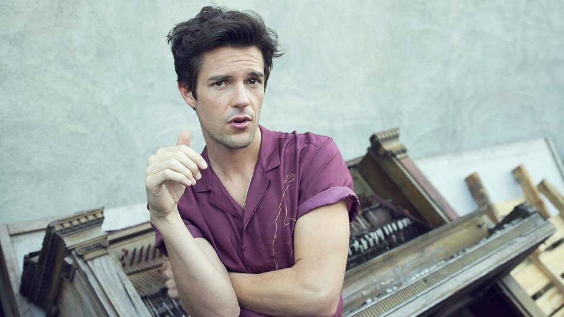

Brandon Flowers
Es un cantante multinstrumentista y compositor estadounidense. Conocido internacionalmente por ser vocalista, tecladista y ocasional bajista de la banda de rock indie The Killers.
Por Karen Sosa
Nació el 21 de Junio de 1981 en Las Vegas, Nevada. La familia Flowers vivió en Henderson, Nevada hasta que Brandon tuvo ocho años. Luego se mudaron a Payson, dos años antes de trasladarse a Nephi, Utah cuando él estaba en sexto grado. Brandon vivió en Nephi hasta su tercer año de escuela secuandaria en Juab High School. Se mudó a Las Vegas para vivir con su tía y se graduó de Chaparral High School en 1999.
SUS
REFERENTES
Se influenció en bandas como The Smiths, New Order, así como The Cars, The Beatles, Morrisey, The Cure, James y Oasis. Su amor por la música fue descubierto con la canción Heroes de David Bowie cuando la escuchó en la radio camino a su primer día de clases en la Universidad.
Siento que quiero ser una fuerza positiva en el mundo, y elevar a la gente
Brandon Flowers
Siento que quiero ser una fuerza positiva en el mundo, y elevar a la gente
Brandon Flowers
SU LLEGADA
A THE KILLERS
Se unió al grupo Blush Response, pero fué expulsado en el 2001 cuando se negó a mudarse con el resto de ellos a Los Ángeles, California. The Killers se fundó posteriormente, cuando Flowers respondió al anuncio de un guitarrista Dave Keuning en Las Vegas, el cual buscaba un vocalista para formar una banda. Mark Stoermer se convirtió en el bajista y Ronnie Vannucci en el baterista. Una de sus principales influencias como cantante es Bruce Springsteen.
COMO
SOLISTA
Flowers anunció el 29 de abril del 2010 en el sitio web de The Killers que lanzaba su carrera como solista sin abandonar la banda. Su álbúm debut como solista se llamó Flamingo, salió a la venta el 14 de septiembre de 2010. A principios del primer trimestre del 2015 Brandon Flowers anunció su álbum The Desired Effet. Salió a la venta el 19 de mayo del mismo año.